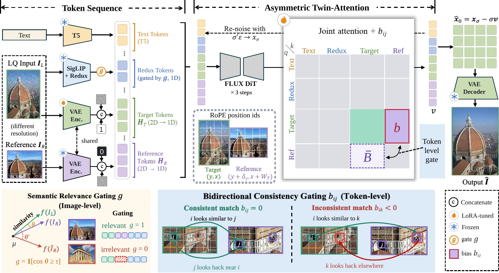

Recovering What Matters, Transferring Only What Is Reliable: Toward Precise Reference-Based Super-Resolution
arXiv preprint, 2026 · Under review at CVPR 2027

PreciseRef lets a super-resolution model faithfully read text, codes and identity cues from a reference image, while two gates block unreliable reference content. On our VeriRef benchmark it reaches 85.6% character accuracy and 76.3% exact code decoding, versus 17.4% and 0% for existing methods.